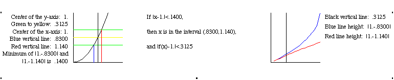
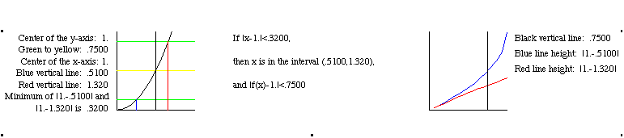

Analysis: We have written a Maple procedure that
illustrates the mechanics of delta-epsilon proofs. Students enter:
- a function (f)
- a point in the domain (a)
- an expected limit (L), and
- maximum values for epsilon and delta.
The procedure generates an animation where each frame
corresponds to a value of e between 0 and the given
maximum. Here are two frames from the animation
for f=x^2 with a=1 and L=1:
The first frame corresponds to an epsilon value of .3125

The second frame corresponds to an epsilon value of .75

Students can apply modeling skills to
find a function that lies below the
minimum (red) graph on the right. This yields
the desired expression for delta in terms of epsilon.
(Please refer to our paper on
Incorporating Modeling into Undergraduate
Courses,
in the proceedings of the ICTM at Samos.)
We are currently revising the Maple code for this procedure.
When the revisions are complete, a link to the improved
code will be provided here.
Back to the top of the poster.